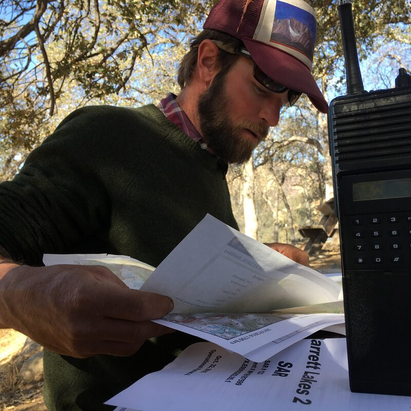
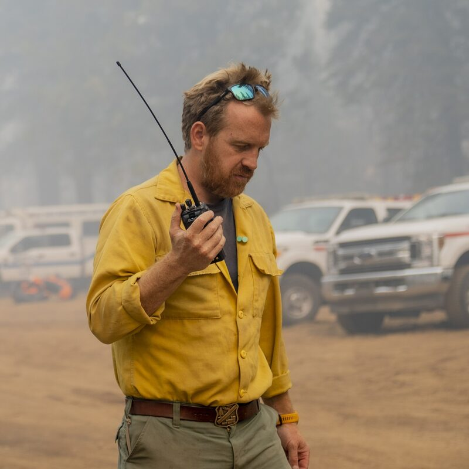

RangerTrak is a free, open-source field-report log and map built for CERT, ACS/ARES,
SAR, and wildland-fire teams reachable only by voice radio. A scribe transcribes what
comes in over the air; RangerTrak keeps the record and plots it.
Getting started is easy: each call is one row of a familiar form — who, where,
when and what. There’s a lot under the cover when you want it.
Runs in your browser. No account, no install required to try it, no cost.


The field calls in; the table writes it down. RangerTrak is built for the person
at the table. Illustrative. NPS photo; USDA Forest Service photo
(Blue Ridge Hotshots, 2021). Public domain.
How it works
The basic setup: teams call in by voice radio, one scribe logs each report
on a laptop, and RangerTrak maps it. No Internet needed once the app and your map
area are on the laptop.
Optional, for later: rangers’ own phones can file their own reports,
and RangerView lets others at the command post watch the log on their phones. Both are on
More than one device.
Install the app on the laptop from
rangertrak.orgbefore heading out. That one visit needs the Internet; after it,
entering reports works offline.